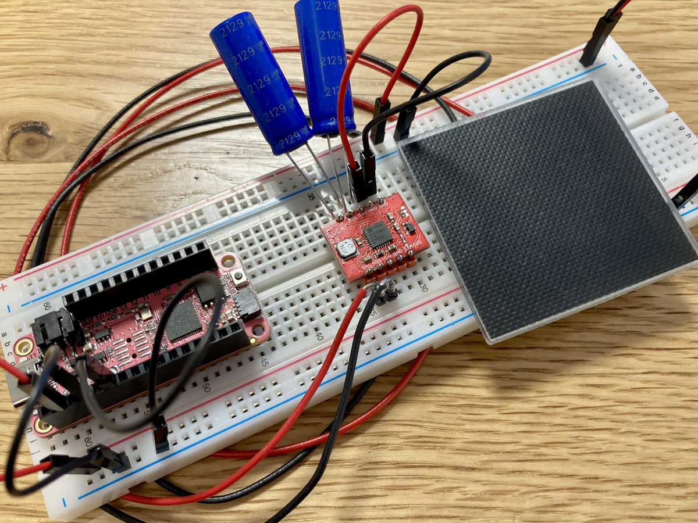

Five albas
By now the criticisms of large language models are well-known, and we’ve all taken sides—across not entirely unfamiliar lines. The process of training a large language model costs millions of dollars, and emits thousands upon thousands of metric tons of carbon into the atmosphere. Their unfathomable datasets hew to hegemonic viewpoints, and conserve the status quo against language’s liberatory functions. Control of these models is dangerously centralized in the hands of unaccountable corporations, posing a risk of democratic disaster as they become a surrogate public sphere. Large language models, to borrow a phrase from Sara Ahmed, cut language off from its own arrival: purveyors of these technologies insist that the model has produced its outputs as though ex nihilo. They claim therefore that they owe nothing to those whose data was statistically chewed and Bayesianly digested, without consent, to make those outputs possible.
All of this notwithstanding, there are artists and writers using large language models to make work that I admire, and I think there are reasonable arguments for the utility of these models, and many potentially fruitful paths forward for mitigating their harms. But as a poet (and particularly a poet who works with computation), I am interested in precisely aspects of language that large language models erase: its transtextuality and its materiality. I want my poems to be in conversation with other writers and other texts. I want the richness of the poems’ material forms, and the conditions of the poems’ production, to be manifest, and affect how the poems are understood.
Toward this end, I’ve been working over the past couple of years on a project called “solar-powered dawn poems.” The system as it stands now consists of a radically small language model, trained on a low-power microcontroller (an Adafruit Feather RP2040), which operates only when drawing sufficient energy from a small solar panel. This language model (actually, a Markov chain) is trained on a corpus of albas, a poetry genre in which lovers lament the oncoming dawn, and it generates new examples of poems in this genre—again, using only solar power. I’ve been putting this corpus together from scratch. It is composed entirely of albas, aubades and tagelieds in the public domain (in the United States, at least), many of which have never before been transcribed into plain text. I’ve written more about the technical and conceptual aspects of the project elsewhere.
I’ve been setting the device out in the window to catch the afternoon sun since the beginning of spring, and in that period, it has generated several hundred lines of poetry. My eventual goal is for the generated lines to stand alone, with only small amounts of editorial intervention needed on my part. But in the mean time, I’ve been making poems by taking the raw output and editing it—smoothing the transitions between lines, rewriting phrases to use more contemporary diction, and shifting pronouns a bit to make the poems conform more closely with my values of equity in gender and relationships. The poems below are representative of the output of this process.
1.
Nothing suits the desires of us. We had
Already taken two in that hour.
They felt dolorous woes, as lovely
As the moon, as fair as you.
Drowsy Phoebus, come away,
My joy, my dear dear,
Why won’t you help me?
2.
Ah, woe! There is no bright
Dream arriving. I did not cut
The tongue of Philomela.
Why, lovely swallow, Pandion’s child,
Do you yearn for soft embraces?
This fair maid rose, and she did not.
The little birds are waking. Sleep no more.
Don’t forget. They lay there talking awhile.
It was the light of the eyes.
3.
Where sleep seals—
Its dew where sorrow left it—
When in love’s fire—
We melt without your heat.
Drawn within their arms,
They kissed again.
Now that will never be.
More from the setting sun!
How it changed, and said,
Or seemed to say, in scorn.
4.
Stay! When flocks, and herds,
and concerns fail, this is it.
They wake into a light.
You will catch cold, and curse me.
When flocks, and herds, and concerns fail,
Let me embrace you.
You turned back in sight of Zeus—
Places of the moon.
5.
Night is away—it’s morning. For her
The nightingales sing. Pale death
Still holds its power over me,
Forever. My own knight is straying,
And has scarcely appeared.
Delay your coming.
How swiftly fly the grasps of love.
Love has come for me.